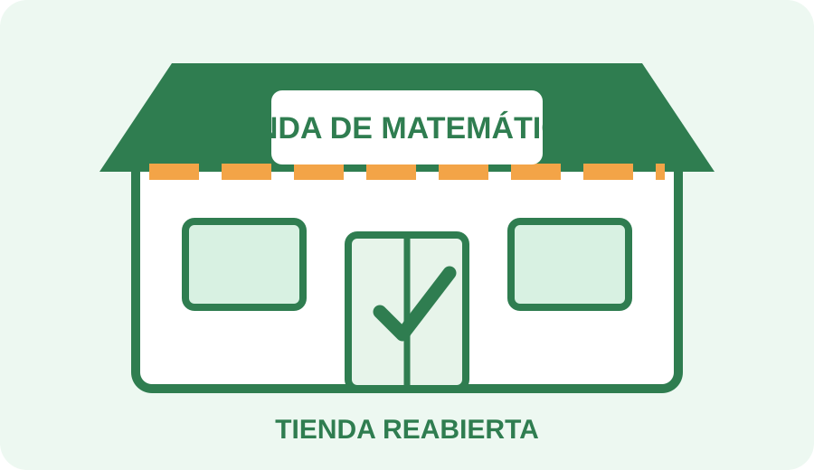

Desbloqueo final
Reactivar la Tienda
Reúnan las cuatro tarjetas recuperadas de las cajas y escríbanlas en el orden del recorrido.

Principios recuperados
Código del cofre final
2302
Abran el último candado y recuperen el mensaje de cierre.
✦ ✧ ✦ ✧ ✦
¡Escape completado!

Hacer matemática implica partir de una necesidad, estudiar, producir y justificar respuestas, y sostener una vigilancia epistemológica sobre el proceso.
Tiempo del equipo: --
Puesta en común
- ¿En qué momentos usaron matemáticas conocidas?
- ¿Cuándo tuvieron que estudiar o reinterpretar algo?
- ¿En qué sentido el grupo produjo algo nuevo?
- ¿Qué diferencia hubo entre resolver y responder como matemáticos?
- ¿Qué intervenciones docentes habrían empobrecido la actividad?